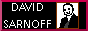
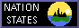
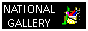

This site is not affiliated with NBC nor ComCast. It is intended to be of parodic nature and nothing else.
This site was made on desktop, and as such is meant to be viewed on a desktop. No mobile.
   |
hello.if you couldn't already tell, my name is nbc, and welcome to my site!NBCLand has been in existence since around September 2021, and only now have I decided to give it its own website! pretty please do consider giving me a follow on the Twitter... |
|
This site is not affiliated with NBC nor ComCast. It is intended to be of parodic nature and nothing else. |